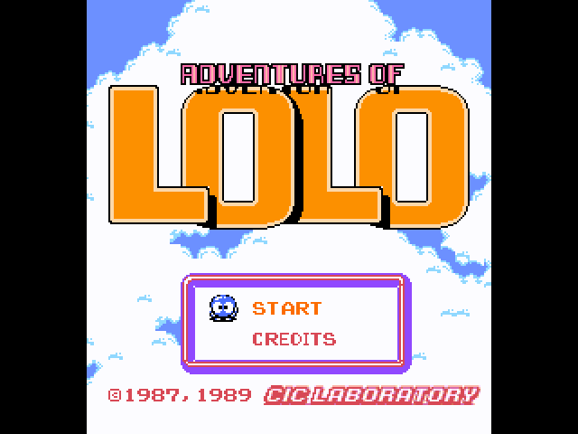

The Adventures of Lolo
Projeto final para a matéria de Introdução a Sistemas Computacionais

Presentation by Aquila, Eduardo e Matheus
Hora de analisar o código fonte
O que aprendemos com esse projeto?
Programação em Assembly é muito demorada
Programação em Assembly é confusa
Mas a gente no decorrer do projeto descobriu a solução